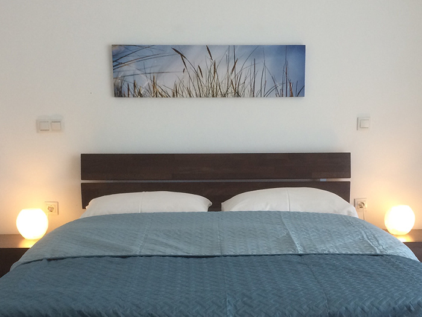
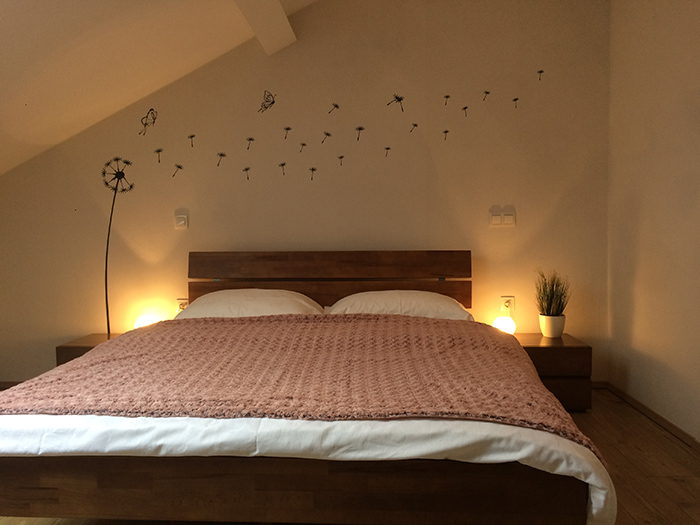
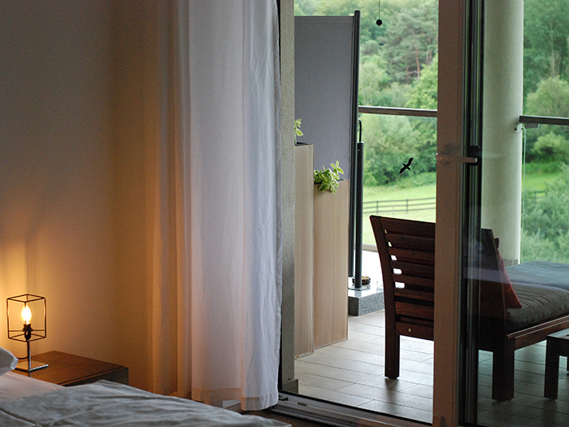
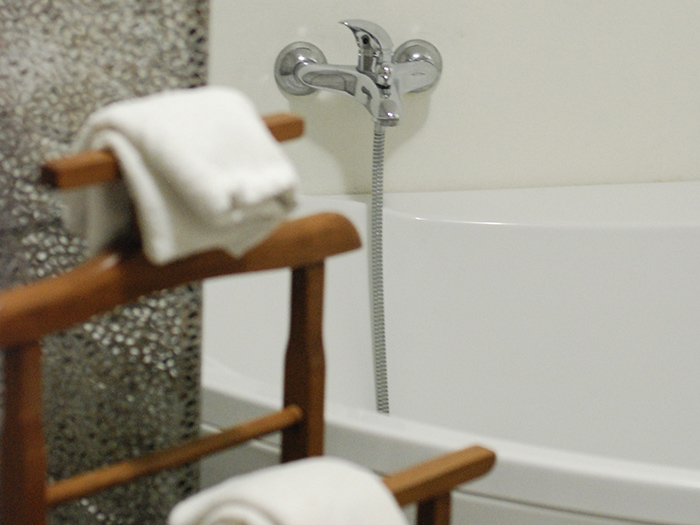
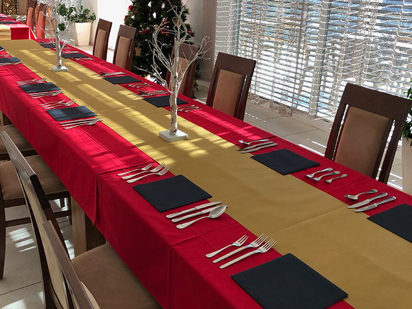
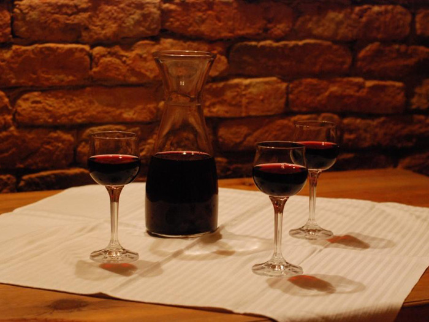
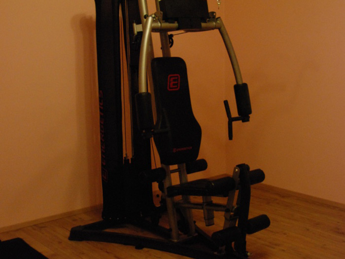

Ponudba
Možnost nastanitve
Nudimo vam prenočišče v 6 različnih sobah, kjer je na voljo skupaj 14 ležišč.
Vsaka soba ima svojo kopalnico in toaleto. Po želji lahko sobo opremimo tudi s televizorjem ali dodamo dodatno ležišče.
Skupno lahko na kmetiji prenoči do 25 gostov.





Večnamenski gostinski prostor
Ponujamo prostoren večnamenski gostinski prostor, primeren za organizacijo različnih slavij, zaključnih prireditev, rojstnih dni, obletnic, izobraževalnih seminarjev, degustacij, poslovnih srečanj in drugih dogodkov.

Kulinarika
Turistična kmetija je pravi naslov za tiste, ki si želijo poskusiti pravo domačo kulinariko.
V shrambi imamo vedno sestavine za hladne narezke in dober kruh, po dogovoru pa pripravimo tudi vse prekmurske specialitete in tudi ostale jedi.
Med drugim lahko poskusite tudi naše domače vino ali žganje.

Možnost za razne aktivnosti
Okolica ponuja bogate možnosti za kolesarjenje, treking, sprostitev v naravi ali miren počitek, prav tako pa tudi pomoč pri različnih opravilih na kmetiji.
V fazi posodobitve imamo tudi novo fitnes sobo ter savno, ki je trenutno še v izgradnji.
Na voljo je tudi možnost izposoje koles (2x moški kolesi in 2x žensko kolo).
